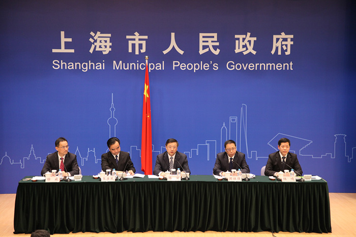

为保障上海食品更安全、消费更放心、市民更满意，我们不断创新社会治理，加强基层基础，推进诚信自律，引导各方参与，构筑食品安全群防共治格局。
（一）实施网格化管理

徐汇区网格化管理中心
食品安全融入城市精细化管理。2015 年起逐步将食品安全纳入网格化管理，实现市、区、街镇、村居委会四级联勤联动，将无证无照食品生产经营等五项食品安全事件纳入网格巡查和处置。
（二）推进诚信自律
①全面推进“放心餐厅”、“放心食堂”建设

②《食品药品领域黑名单管理与信用联合惩戒》获得十大信用典型案例
③上海西郊国际农产品交易中心实施食品安全追溯
④企业实施食品安全追溯
⑤推动实施食品安全责任险
本市2200 余户食品生产经营企业投保食品安全责任险，保费收入1500余万元，保险金额高达90.68亿元
（三）各方积极参与

定期召开新闻发布会
食品安全社会监督员聘任仪式
市食药监局领导参加民生访谈回应市民关切
宝山区举办市民食品安全知识竞赛

企业建立食品安全科普站
发布年度食品安全白皮书
（四）实施品牌战略，坚守品牌信誉
品牌是信誉的凝结。要保护和传承食品行业老字号，使优秀品牌不断发扬光大，发挥其质量管理的示范带动作用。上海食品老品牌既凝结了城市文化，又在传承中不断创新，依靠现代科技，以质量安全赢得市民满意。